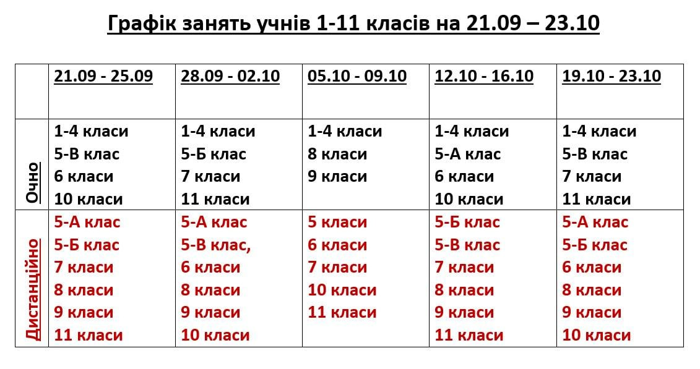
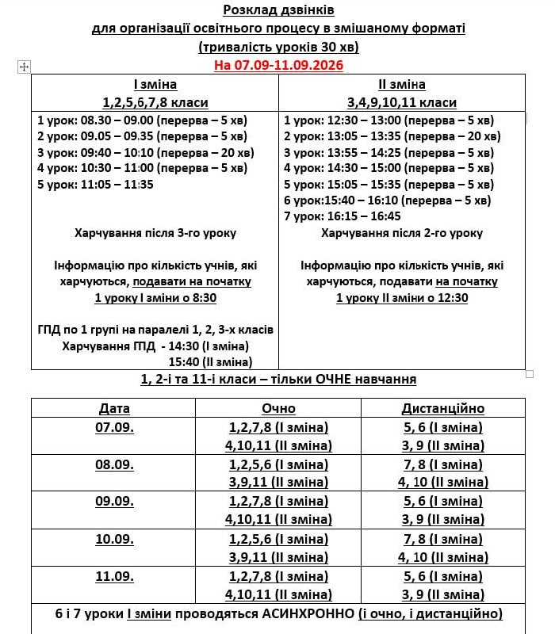

Розклади, правила й оголошення у змішаному форматі
Оновлено 18.09.2026Помітили неточність на сторінці — напишіть у чат, виправимо. 🙏
| Дата | Формат | Зміна / початок |
|---|---|---|
| Пн, 21.09 | Очно | I зміна · 08:30 |
| Вт, 22.09 | Очно | I зміна · 08:30 |
| Ср, 23.09 | Очно | I зміна · 08:30 |
| Чт, 24.09 | Очно | I зміна · 08:30 |
| Пт, 25.09 | Очно | I зміна · 08:30 |
Тиждень 21–25.09 — 6-А очно у школі, I зміна. З 21.09 — новий розклад дзвінків (велика перерва після 4-го уроку).
21.09–23.10.2026. «Очно» — цілий тиждень у школі; «Дистанц.» — тільки I зміна (08:30, онлайн).
| Тиждень | Формат 6-А | Зміна / початок |
|---|---|---|
| 21.09 – 25.09 | Очно | I зміна · 08:30 |
| 28.09 – 02.10 | Дистанц. | I зміна · 08:30 (онлайн) |
| 05.10 – 09.10 | Дистанц. | I зміна · 08:30 (онлайн) |
| 12.10 – 16.10 | Очно | I зміна · 08:30 |
| 19.10 – 23.10 | Дистанц. | I зміна · 08:30 (онлайн) |

Джерело: офіційний графік від школи (18.09.2026). Може уточнюватись.
Дзвінки та формати очно/дистанційно — фото від школи. Натисніть, щоб відкрити на весь екран.
⚠️ Цей тиждень завершено — розклад більше не діє. Актуальний графік — вище.

Зверніть увагу: з понеділка 21 вересня діють нові графіки розвезення дітей після уроків.
З 21.09 асинхронний режим для 6-го і 7-го уроків скасовується.
Офіційний тижневий графік очного/дистанційного навчання на 21.09–23.10.2026.
З понеділка 21 вересня змінюється розклад дзвінків для 5–11 класів.
⚠️ Не актуально з 21.09.2026 — графік змінився (дивіться «Поточний режим»). Збережено для довідки.
Повідомлення від класного керівника від 11.09.2026.
Розклад уроків та дзвінків — на вкладці «Дзвінки».
Повідомлення у групі «6-А» після зборів (01.09).
Оновлюється в міру нових повідомлень керівника.
Дистанційне навчання, I зміна, 45 хв. Початок о 08:30.
| Урок | Час | Перерва після |
|---|---|---|
| 1 | 08:30 – 09:15 | 5 хв |
| 2 | 09:20 – 10:05 | 5 хв |
| 3 | 10:10 – 10:55 | 5 хв |
| 4 | 11:00 – 11:45 | 20 хв |
| 5 | 12:05 – 12:50 | 5 хв |
| 6 | 12:55 – 13:40 | 5 хв |
| 7 | 13:45 – 14:30 | 5 хв |
| 8 | 14:35 – 15:20 | — |
Джерело: розклад від школи від 18.09.2026. Приблизно 30 хв уроку — онлайн, решта — самостійна робота.
Змішаний формат, тривалість уроків — 30 хв.
| Урок | Час | Перерва після |
|---|---|---|
| 1 | 08:30 – 09:00 | 5 хв |
| 2 | 09:05 – 09:35 | 5 хв |
| 3 | 09:40 – 10:10 | 20 хв |
| 4 | 10:30 – 11:00 | 5 хв |
| 5 | 11:05 – 11:35 | — |
Очне навчання I зміни — 5 уроків, до 11:35. Уроки 6 і 7 проводилися асинхронно (вчителі надсилали презентації, відео та ДЗ у групу класу). З 21.09 асинхронний режим скасовано — уроки 6 і 7 ідуть за розкладом дзвінків (12:55–13:40 і 13:45–14:30).
Харчування — після 3-го уроку. ГПД по 1 групі на паралелі 1–3 класів; харчування ГПД — 14:30.
| Урок | Час | Перерва після |
|---|---|---|
| 1 | 12:30 – 13:00 | 5 хв |
| 2 | 13:05 – 13:35 | 20 хв |
| 3 | 13:55 – 14:25 | 5 хв |
| 4 | 14:30 – 15:00 | 5 хв |
| 5 | 15:05 – 15:35 | 5 хв |
| 6 | 15:40 – 16:10 | 5 хв |
| 7 | 16:15 – 16:45 | — |
Харчування — після 2-го уроку.
Режим навчання учнів 5–11 класів (нескорочені уроки).
| Урок | Час | Перерва після |
|---|---|---|
| 1 | 08:30 – 09:15 | 10 хв |
| 2 | 09:25 – 10:10 | 25 хв |
| 3 | 10:35 – 11:20 | 25 хв |
| 4 | 11:45 – 12:30 | 5 хв |
| 5 | 12:35 – 13:20 | 5 хв |
| 6 | 13:25 – 14:20 | 5 хв |
| 7 | 14:25 – 15:10 | 5 хв |
| 8 | 15:15 – 16:00 | — |
У дужках — кабінет: «каб.» — номер, «майстерня» — кабінет технологій, «спортзал» — фізкультура.
👆 Натисніть, щоб перемкнути час у колонці «Час». Зараз діє режим 45-хв уроків з 21.09 (I зміна, велика перерва після 4-го, уроки 6–7 — за розкладом). «Звичайний · 45 хв» — звичайний шкільний розклад дзвінків.
| № | Час | Пн | Вт | Ср | Чт | Пт |
|---|---|---|---|---|---|---|
| 1 | 08:30–09:1508:30–09:15 | Англійська мова каб. 37 | Іспанська каб. 26 | Математика каб. 26 | ІК «Досліджуємо історію та суспільство» каб. 25 | Фізкультура спортзал |
| 2 | 09:20–10:0509:25–10:10 | ІК «Здоров'я, безпека та добробут» каб. 50 | Математика каб. 25 | Технології каб. 49 (майстерня) | Українська мова каб. 30 | Іспанська каб. 47 |
| 3 | 10:10–10:5510:35–11:20 | Географія каб. 26 | Українська мова каб. 30 | Українська мова каб. 30 | Пізнаємо природу каб. 35 | Інформатика каб. 41 / 31 |
| 4 | 11:00–11:4511:45–12:30 | Українська мова каб. 30 | Зарубіжна література каб. 27 | ІК «Досліджуємо історію та суспільство» каб. 25 | Українська література каб. 38 | Англійська мова каб. 37 |
| 5 | 12:05–12:5012:35–13:20 | Технології каб. 49 (майстерня) | Пізнаємо природу каб. 35 | Інформатика каб. 41 / 31 | Англійська мова каб. 37 | Українська література каб. 39 |
| 6 | 12:55–13:4013:25–14:20 | Математика каб. 41 | Англійська мова каб. 37 | Фізкультура спортзал | Математика каб. 41 | Математика каб. 41 |
| 7 | 13:45–14:3014:25–15:10 | — | — | Мистецтво каб. 27 | Фізкультура спортзал | Географія каб. 35 |
У поточному режимі з 21.09 (I зміна) — уроки по 45 хв за розкладом дзвінків, велика перерва після 4-го (11:45–12:05). Асинхронний режим для уроків 6 і 7 з 21.09 скасовано — вони проводяться за розкладом (6-й: 12:55–13:40, 7-й: 13:45–14:30). «Звичайний · 45 хв» — звичайний шкільний розклад дзвінків.
Дві частини: 🌅 зранку — підвіз до школи і 🏠 після уроків — розвезення.
Час відправлення від зупинки. Чотири маршрути.
Ранковий підвіз не змінювався — оновлення від 18.09 стосується лише розвезення після уроків (нижче).
| Зупинка | Відправлення |
|---|---|
| Требухівський ліцей | 7:35 |
| вул. Чорних Запорожців | 7:40 |
| вул. Шевченка – Крайова (перехрестя) | 7:42 |
| вул. Садова (дитяча площадка) | 7:45 |
| вул. Садова – Дьогтярина (перехрестя) | 7:47 |
| вул. Садова (біля трансформатора) | 7:50 |
| Требухівський ліцей | 7:55 |
| Зупинка | Відправлення |
|---|---|
| Требухівський ліцей | 7:55 |
| пров. Бориспільський | 7:58 |
| ДСРЦ «Сонячне світло» | 8:00 |
| вул. Бориспільська (маг. Грушка) | 8:02 |
| вул. Сомова | 8:06 |
| маг. «Жовтень» | 8:10 |
| Требухівський ліцей | 8:20 |
| Зупинка | Відправлення |
|---|---|
| Требухівський ліцей | 7:30 |
| х. Переможець | 7:40 |
| Дачі | 7:45 |
| вул. Довженка | 7:47 |
| вул. Будівельників | 7:49 |
| маг. Хуторок | 7:51 |
| вул. Варченкова | 7:53 |
| вул. Володимирська | 7:55 |
| вул. Героїв Азову | 7:57 |
| Требухівський ліцей | 8:00 |
| Зупинка | Відправлення |
|---|---|
| Требухівський ліцей | 8:00 |
| вул. Торгмашівська | 8:04 |
| вул. М. Швидака | 8:06 |
| вул. Повстанська | 8:08 |
| вул. Вокзальна | 8:10 |
| вул. Липнева | 8:12 |
| вул. Ярослава Мудрого | 8:15 |
| Требухівський ліцей | 8:25 |
Требухівський ліцей → Торгмашівська → М.Швидака → Повстанська → Вокзальна → Липнева → Ярослава Мудрого → ліцей → Героїв Азову → Володимирська → Варченкова → «Хуторок» → Будівельників → Довженка → х.Переможець → Дачі → ліцей.
Новий розклад діє з 21.09.2026. Час усіх трьох рейсів змінено: було 11:40 / 15:45 / 17:00 — стало 13:00 / 15:00 / 16:00.
| Зупинка | Рейс 1 | Рейс 2 | Рейс 3 |
|---|---|---|---|
| Требухівський ліцей | 13:00 | 15:00 | 16:00 |
| вул. Торгмашівська | 13:03 | 15:03 | 16:03 |
| вул. М. Швидака | 13:05 | 15:05 | 16:05 |
| вул. Повстанська | 13:07 | 15:07 | 16:07 |
| вул. Вокзальна | 13:09 | 15:09 | 16:09 |
| вул. Липнева | 13:11 | 15:11 | 16:11 |
| вул. Ярослава Мудрого | 13:13 | 15:13 | 16:13 |
| Требухівський ліцей | 13:18 | 15:18 | 16:18 |
| вул. Героїв Азову | 13:24 | 15:24 | 16:24 |
| вул. Володимирська | 13:26 | 15:26 | 16:26 |
| вул. Варченкова | 13:28 | 15:28 | 16:28 |
| маг. «Хуторок» | 13:30 | 15:30 | 16:30 |
| вул. Будівельників | 13:31 | 15:31 | 16:31 |
| вул. Довженка | 13:32 | 15:32 | 16:32 |
| х. Переможець | 13:34 | 15:34 | 16:34 |
| Дачі | 13:39 | 15:39 | 16:39 |
| Требухівський ліцей | 13:47 | 15:47 | 16:47 |
Требухівський ліцей → Чорних Запорожців → Крайова → Садова (трансформатор) → Дьогтярина → Садова (дитяча площадка) → ліцей → Бориспільська (Грушка) → пров. Бориспільський → Сонячне сяйво → Сомова → «Жовтень» → ліцей.
Новий розклад діє з 21.09.2026. Змінився час 2-го і 3-го рейсів: було 14:00 і 17:00 — стало 15:00 і 16:00.
| Зупинка | Рейс 1 | Рейс 2 | Рейс 3 |
|---|---|---|---|
| Требухівський ліцей | 13:00 | 15:00 | 16:00 |
| вул. Чорних Запорожців | 13:05 | 15:05 | 16:05 |
| вул. Крайова – Шевченка (перехрестя) | 13:07 | 15:07 | 16:07 |
| вул. Садова (трансформатор) | 13:10 | 15:10 | 16:10 |
| вул. Садова – Дьогтярина (перехр.) | 13:12 | 15:12 | 16:12 |
| вул. Садова (дитяча площадка) | 13:14 | 15:14 | 16:14 |
| Требухівський ліцей | 13:24 | 15:24 | 16:24 |
| вул. Бориспільська (маг. Грушка) | 13:27 | 15:27 | 16:27 |
| пров. Бориспільський | 13:29 | 15:29 | 16:29 |
| пров. Бориспільський 1 (Сонячне сяйво) | 13:31 | 15:31 | 16:31 |
| вул. Сомова | 13:33 | 15:33 | 16:33 |
| маг. «Жовтень» | 13:35 | 15:35 | 16:35 |
| Требухівський ліцей | 13:42 | 15:42 | 16:42 |
Дітей у автобус не перераховують пофамільно: дитина на зупинці — сідає в автобус; дорослих не пускають.
Що озвучив класний керівник на батьківських зборах — за категоріями.
Натисніть «Відкрити» біля предмета — відкриється папка з підручником у Google Drive (перегляд і завантаження без реєстрації).
| Предмет | Підручник |
|---|---|
| Українська мова | 📖 Відкрити ⤓ Завантажити Авраменко, Тищенко |
| Українська література | 📖 Відкрити ⤓ Завантажити Авраменко |
| Зарубіжна література | 📖 Відкрити ⤓ Завантажити Ніколенко, Рудніцька, Мацевко-Бекерська |
| Англійська мова | 📖 Відкрити ⤓ Завантажити Full Blast! Plus 6 (Mitchell) ⚠️ Вибачте, єдиний знайдений варіант — із водяними знаками. Трохи заважає, але кращого поки немає. Якщо дуже дратує — напишіть або поділіться нормальною версією, і я заміню. |
| Іспанська мова | Книги, зошитів та інформації поки немає — щойно зʼявиться, додамо. |
| Математика · частина 1 | 📖 Відкрити ⤓ Завантажити Мерзляк, Полонський, Якір · перша частина |
| Математика · частина 2 | 📖 Відкрити ⤓ Завантажити Мерзляк, Полонський, Якір · друга частина |
| Географія | 📖 Відкрити ⤓ Завантажити Гільберг, Довгань, Совенко |
| Пізнаємо природу | 📖 Відкрити ⤓ Завантажити Біда |
| Досліджуємо історію і суспільство | 📖 Відкрити ⤓ Завантажити Пометун, Ремех |
| Інформатика | 📖 Відкрити ⤓ Завантажити Коршунова, Завадський |
| Технології | 📖 Відкрити ⤓ Завантажити Ходзицька та ін. (Ранок) |
| Мистецтво | 📖 Відкрити ⤓ Завантажити Кізілова, Гринишина |
| Здоров'я, безпека та добробут | 📖 Відкрити ⤓ Завантажити Шиян та ін. |
| Етика | 📖 Відкрити ⤓ Завантажити Данилевська |
📖 «Відкрити» — читати онлайн; ⤓ «Завантажити» — зберегти PDF (завантажується напряму). Джерело — офіційні/освітні репозиторії НУШ-підручників.
Форми, які треба роздрукувати, заповнити й підписати. Підписані здаємо класному керівнику.
| Документ | Термін здати | Завантажити |
|---|---|---|
| Згода на самостійне повернення дитини додому Дитина сама йде додому після своєї зміни, зокрема після сигналу «Повітряна тривога». Заява на директора ліцею. |
уточнюється | ⤓ Бланк (.docx) |
Нові бланки додаватимемо сюди, щойно надійдуть від школи.
Одне натискання — і ми знатимемо, чи варто вести її далі. Відповідь анонімна.
Хочете щось додати — чого бракує або що виправити? Це вже необов'язково.
Вашу оцінку враховано.